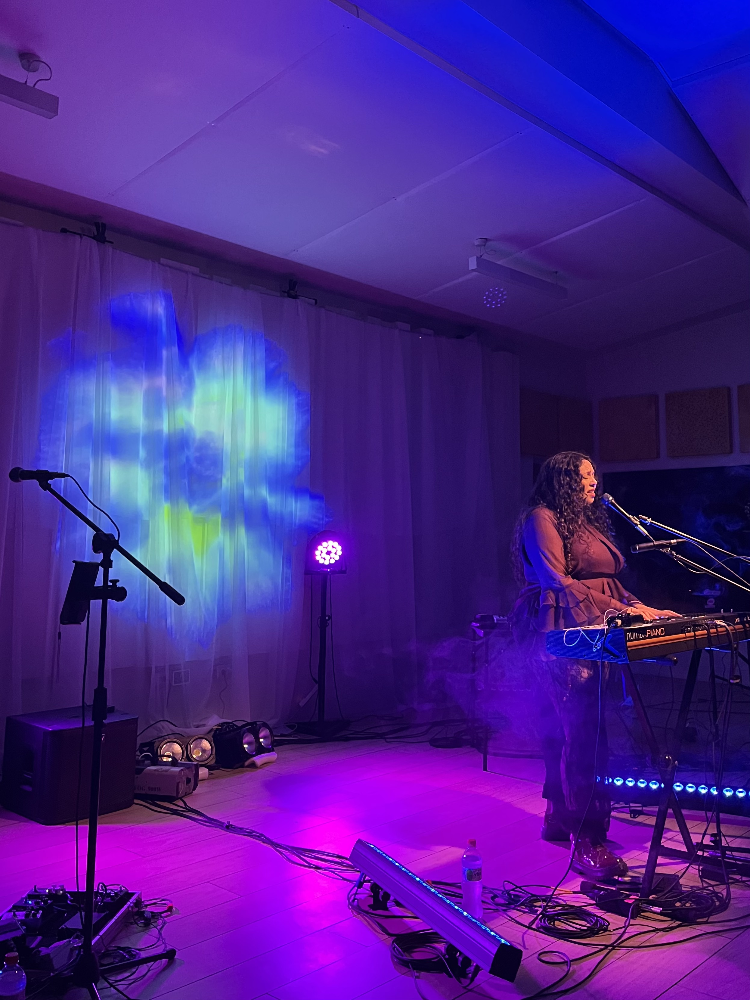
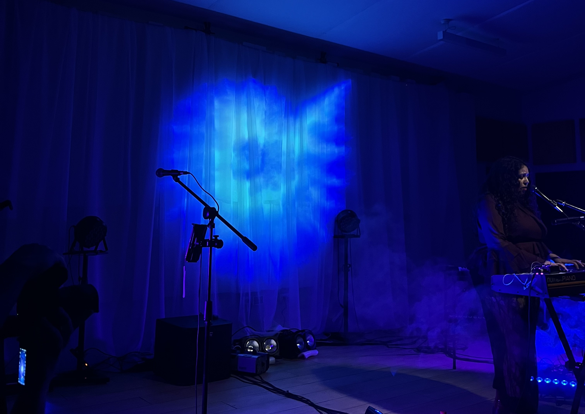
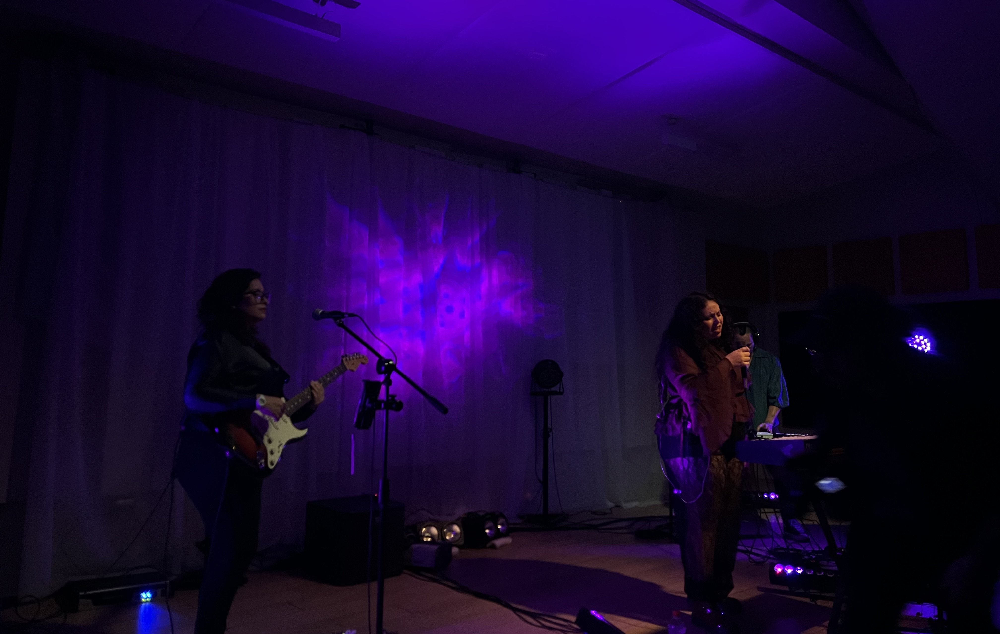
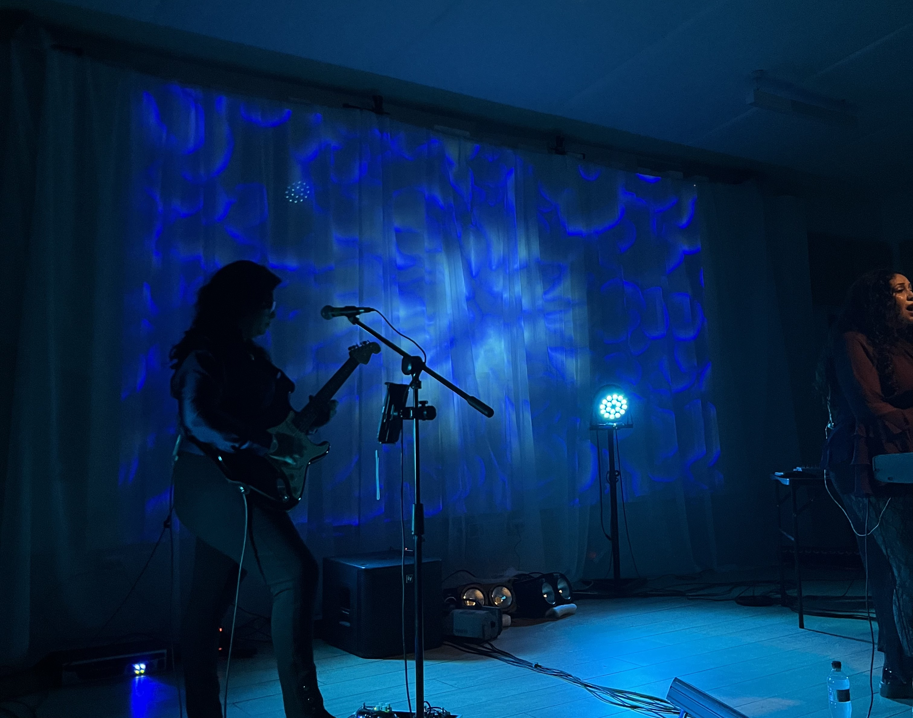
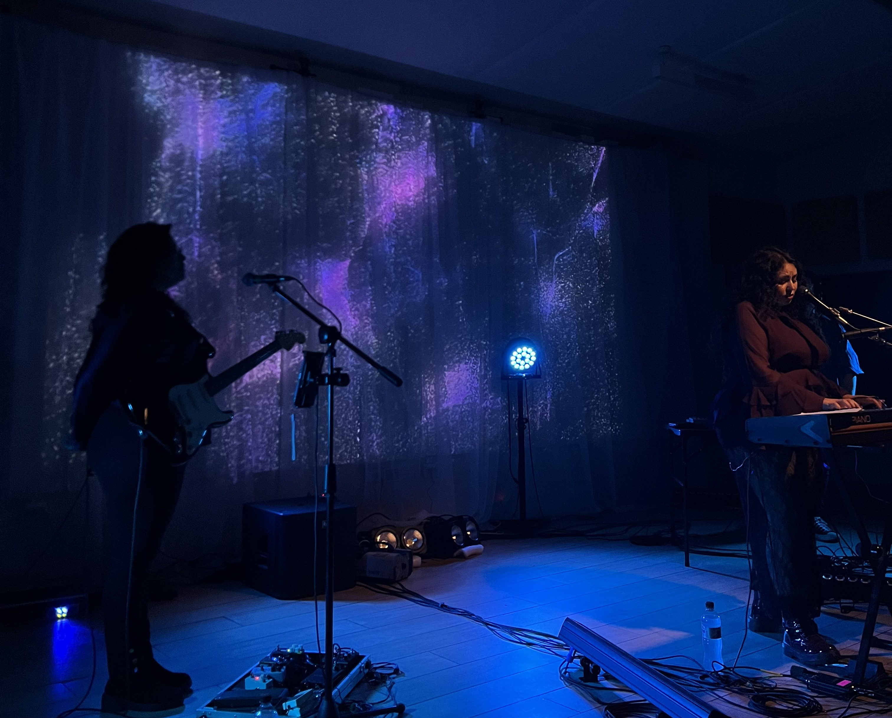
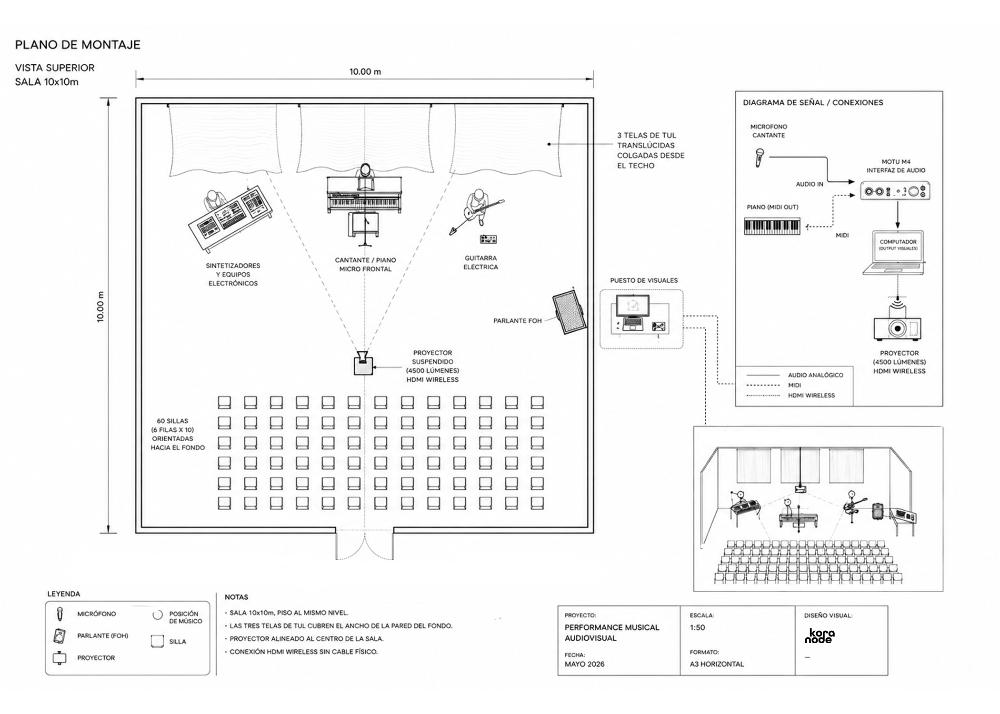

El mar como estado emocional.
Un cuerpo en tránsito entre la profundidad y la superficie.




Micrófono de Fernanda en directo -> TouchDesigner. Intensidad, frecuencia y silencio modifican las visuales en tiempo real.
Teclas disparan eventos visuales — cambios de estado, transiciones, explosiones de luz.
TouchDesigner -> MadMapper -> tela tul en el fondo del escenario.
